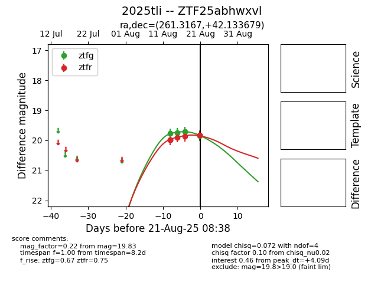

Target 2025tli at 2025-08-21 09:29, see:
FINK: fink-portal.org/ZTF25abhwxvl
Lasair: lasair-ztf.lsst.ac.uk/objects/ZTF25abhwxvl
ALeRCE: alerce.online/object/ZTF25abhwxvl
TNS: wis-tns.org/object/2025tli
YSE: ziggy.ucolick.org/yse/transient_detail/2025tli
alt names
ZTF25abhwxvl (ztf,alerce)
2025tli (tns,yse)
coordinates:
equatorial (ra, dec) = (261.3167,+42.13368)
galactic (l, b) = (67.3654,+33.24711)
photometry
last ztfg=19.85, ztfr=19.83
4 ztfg, 5 ztfr detections
